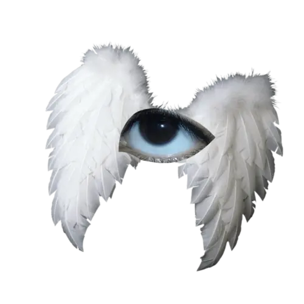
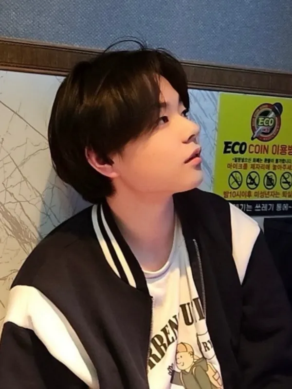

jeongwon
portfolio
portfolio
CLICK THIS CLICK THIS CLICK THIS CLICK THIS CLICK THIS CLICK THIS CLICK THIS CLICK THIS CLICK THIS CLICK THIS CLICK THIS CLICK THIS CLICK THIS CLICK THIS
CLICK THIS CLICK THIS CLICK THIS CLICK THIS CLICK THIS CLICK THIS CLICK THIS CLICK THIS CLICK THIS CLICK THIS CLICK THIS CLICK THIS CLICK THIS CLICK THIS
노정원
최근 수정 시각:
분류: 고등학생
|
노정원
盧禎源｜Noh Jeong-won |
|
|
  |
|
|
출생
|
2008년 8월 29일
|
|
신체
|
176cm, 68kg, A형, INFP
|
|
종교
|
기독교 (유신론)
|
|
학력
|
와부초등학교 (18회 / 졸업)
예봉중학교 (14회 / 졸업)
수원정보과학고등학교 (재학중)
|
1.
소개
수원정보과학고등학교에 재학 중인 노정원입니다.
보안 동아리 기장으로서 부원들을 가르치며, 웹 보안·인프라·백엔드를 직접 부딪히며 공부하고 있습니다.
웹 보안 분야에서는 XSS·CSRF·SQL Injection·Command Injection·File Vulnerability·SSRF 등
주요 취약점을 분석하고 모의 실습을 진행했으며, PKI·TLS·DNS 터널링 등 암호학과 네트워크 보안도 학습했습니다.
인프라 측면에서는 OSI 7계층 네트워크 구조와 데이터베이스 암호화를 이해하고,
백엔드 개발은 Node.js·Express.js 기반으로 라우팅과 미들웨어를 학습했으며,
미래유망지원사업 팀 프로젝트(GetAPI)에서 Spring을 활용한 서버 설계에 참여하고 있습니다.
전교부회장으로 학생회를 이끌었고, K-TECH 아이디어 발표대회에서
건설 현장 3D 통합 관제 플랫폼 COUPLING을 기획해 총장상을 수상했습니다.
보안 동아리 기장으로서 부원들을 가르치며, 웹 보안·인프라·백엔드를 직접 부딪히며 공부하고 있습니다.
웹 보안 분야에서는 XSS·CSRF·SQL Injection·Command Injection·File Vulnerability·SSRF 등
주요 취약점을 분석하고 모의 실습을 진행했으며, PKI·TLS·DNS 터널링 등 암호학과 네트워크 보안도 학습했습니다.
인프라 측면에서는 OSI 7계층 네트워크 구조와 데이터베이스 암호화를 이해하고,
백엔드 개발은 Node.js·Express.js 기반으로 라우팅과 미들웨어를 학습했으며,
미래유망지원사업 팀 프로젝트(GetAPI)에서 Spring을 활용한 서버 설계에 참여하고 있습니다.
전교부회장으로 학생회를 이끌었고, K-TECH 아이디어 발표대회에서
건설 현장 3D 통합 관제 플랫폼 COUPLING을 기획해 총장상을 수상했습니다.
2.
활동 및 경험
전교부회장으로 취임하며 학교 행사와 대의원 회의, 학생회 인원 관리와 학생들을 선도 하는 역할을 맡았고, 성공적으로 수행 하였으며,
DevLib팀의 팀장으로써 GetAPI 프로젝트를 성공적으로 완성시켰습니다.
고용노동부 주최 K-TECH 대회에서 신기술 활용 프로젝트를 발표하며 리더십·문제 해결 능력·대인관계 역량을 키웠습니다.
DevLib팀의 팀장으로써 GetAPI 프로젝트를 성공적으로 완성시켰습니다.
고용노동부 주최 K-TECH 대회에서 신기술 활용 프로젝트를 발표하며 리더십·문제 해결 능력·대인관계 역량을 키웠습니다.
3.
기술 역량
자료구조 기초
C언어를 통해 큐·스택·리스트·배열 등 기초 자료구조를 실습하며 습득했습니다.
네트워크
OSI 7계층(물리·데이터링크·네트워크·전송·세션·표현·응용)의 역할과 계층 간 데이터 흐름을 이해합니다. IP 주소 체계와 서브넷 마스크(CIDR 표기법), 서브네팅을 통한 네트워크 분할·설계를 할 수 있습니다. TCP 3-Way Handshake·4-Way Handshake, UDP 특성, 흐름 제어(슬라이딩 윈도우)·혼잡 제어를 이해합니다. DNS 동작 원리(재귀·반복 조회, A·CNAME·MX 레코드), ARP, NAT, DHCP의 동작 방식을 학습했습니다. 로드밸런서(L4·L7), 리버스 프록시(Nginx), 방화벽·ACL을 이용한 트래픽 제어를 이해합니다. HTTP/1.1·HTTP/2·HTTP/3(QUIC) 차이, Keep-Alive 등 프로토콜 진화 과정을 학습했습니다.
웹 프론트엔드
HTML5 시맨틱 태그와 CSS3(Flexbox·Grid·미디어쿼리)를 이용한 반응형 레이아웃을 구현합니다. JavaScript(ES6+) 기반으로 DOM 조작, 이벤트 처리, 비동기 처리(Promise·async/await)를 다룹니다.
백엔드
HTTP 메서드(GET·POST·PUT·PATCH·DELETE)와 상태 코드 의미를 이해하고 RESTful 설계 원칙(Stateless·Uniform Interface·Resource 중심)에 따라 API를 설계·구현했습니다. 세션·쿠키·JWT 인증 방식의 차이와 각 방식의 보안 트레이드오프를 이해하며 상황에 따라 선택할 수 있습니다. 데이터베이스 인덱스(B-Tree·해시), 연결 풀링(Connection Pool), 트랜잭션·ACID 속성을 학습했습니다. CDN·Gzip 압축, Redis 캐싱(Cache-Aside·Write-Through 전략), N+1 문제 등 실제 프로덕션 병목을 고려한 성능 최적화를 설계했습니다.
정보보안
XSS·CSRF·SQL Injection 취약점을 이해하고 모의 해킹을 진행했으며, OWASP Top 10을 분석했습니다. 네트워크 보안 분야에서는 TLS 핸드셰이크·DNS 터널링·TCP/IP 중간자 공격(MITM)· Deauth + 4-Way Handshake 사전 공격·Evil Twin 공격 등을 모의 실습했습니다.
암호학
Hash 알고리즘, 대칭키·비대칭키 암호화를 학습하여 TLS 인증서 구조와 공개키 인프라(PKI)에 대한 이해를 갖추고 있습니다.
인프라 · 서버 운영
Proxmox 하이퍼바이저 위에 pfSense 방화벽과 Suricata IPS를 올린 홈랩을 직접 구축·운영하며, VLAN 분리·방화벽 규칙·포트포워딩을 설정하고 IPS 경보 로그를 수집해 공격 트래픽을 분석했습니다. Linux 서버 환경에서 SSH 접근 통제, 서비스 데몬 관리, 로그 모니터링을 수행합니다. Cloudflare Workers + D1로 서버리스 API를 구축하고 GitHub Actions 스케줄러로 외부 데이터를 주기적으로 동기화·정적 빌드하는 CI 파이프라인을 운영 중이며, GitHub Pages 배포·커스텀 도메인·HTTPS 적용 등 정적 사이트 인프라를 관리합니다. Redis·Elasticsearch를 프로젝트에 도입해 캐시·검색 서버를 운영해 본 경험이 있습니다.
C언어를 통해 큐·스택·리스트·배열 등 기초 자료구조를 실습하며 습득했습니다.
네트워크
OSI 7계층(물리·데이터링크·네트워크·전송·세션·표현·응용)의 역할과 계층 간 데이터 흐름을 이해합니다. IP 주소 체계와 서브넷 마스크(CIDR 표기법), 서브네팅을 통한 네트워크 분할·설계를 할 수 있습니다. TCP 3-Way Handshake·4-Way Handshake, UDP 특성, 흐름 제어(슬라이딩 윈도우)·혼잡 제어를 이해합니다. DNS 동작 원리(재귀·반복 조회, A·CNAME·MX 레코드), ARP, NAT, DHCP의 동작 방식을 학습했습니다. 로드밸런서(L4·L7), 리버스 프록시(Nginx), 방화벽·ACL을 이용한 트래픽 제어를 이해합니다. HTTP/1.1·HTTP/2·HTTP/3(QUIC) 차이, Keep-Alive 등 프로토콜 진화 과정을 학습했습니다.
웹 프론트엔드
HTML5 시맨틱 태그와 CSS3(Flexbox·Grid·미디어쿼리)를 이용한 반응형 레이아웃을 구현합니다. JavaScript(ES6+) 기반으로 DOM 조작, 이벤트 처리, 비동기 처리(Promise·async/await)를 다룹니다.
백엔드
HTTP 메서드(GET·POST·PUT·PATCH·DELETE)와 상태 코드 의미를 이해하고 RESTful 설계 원칙(Stateless·Uniform Interface·Resource 중심)에 따라 API를 설계·구현했습니다. 세션·쿠키·JWT 인증 방식의 차이와 각 방식의 보안 트레이드오프를 이해하며 상황에 따라 선택할 수 있습니다. 데이터베이스 인덱스(B-Tree·해시), 연결 풀링(Connection Pool), 트랜잭션·ACID 속성을 학습했습니다. CDN·Gzip 압축, Redis 캐싱(Cache-Aside·Write-Through 전략), N+1 문제 등 실제 프로덕션 병목을 고려한 성능 최적화를 설계했습니다.
정보보안
XSS·CSRF·SQL Injection 취약점을 이해하고 모의 해킹을 진행했으며, OWASP Top 10을 분석했습니다. 네트워크 보안 분야에서는 TLS 핸드셰이크·DNS 터널링·TCP/IP 중간자 공격(MITM)· Deauth + 4-Way Handshake 사전 공격·Evil Twin 공격 등을 모의 실습했습니다.
암호학
Hash 알고리즘, 대칭키·비대칭키 암호화를 학습하여 TLS 인증서 구조와 공개키 인프라(PKI)에 대한 이해를 갖추고 있습니다.
인프라 · 서버 운영
Proxmox 하이퍼바이저 위에 pfSense 방화벽과 Suricata IPS를 올린 홈랩을 직접 구축·운영하며, VLAN 분리·방화벽 규칙·포트포워딩을 설정하고 IPS 경보 로그를 수집해 공격 트래픽을 분석했습니다. Linux 서버 환경에서 SSH 접근 통제, 서비스 데몬 관리, 로그 모니터링을 수행합니다. Cloudflare Workers + D1로 서버리스 API를 구축하고 GitHub Actions 스케줄러로 외부 데이터를 주기적으로 동기화·정적 빌드하는 CI 파이프라인을 운영 중이며, GitHub Pages 배포·커스텀 도메인·HTTPS 적용 등 정적 사이트 인프라를 관리합니다. Redis·Elasticsearch를 프로젝트에 도입해 캐시·검색 서버를 운영해 본 경험이 있습니다.
4.
계획
백엔드 심화
현재 REST API 설계 경험을 바탕으로 Node.js(Fastify) 또는 Python(FastAPI) 프레임워크를 이용한 서버 개발을 심화할 계획입니다. 단일 서버 구조를 넘어 마이크로서비스 아키텍처(MSA)와 메시지 큐(Kafka·RabbitMQ)를 공부하여 대규모 서비스 설계를 이해하고자 합니다. Docker·Kubernetes를 통한 컨테이너화와 GitHub Actions 기반 CI/CD 파이프라인 구축, AWS(EC2·S3·RDS·Lambda) 클라우드 운용을 단계적으로 학습할 예정입니다.
보안 심화
이론과 모의 실습 위주였던 학습을 CTF(Capture The Flag) 대회 참가를 통해 실전 문제 해결 능력으로 발전시킬 계획입니다. Burp Suite·Wireshark 등 전문 도구를 활용한 웹·네트워크 침투 테스트를 심화하고, 리버스 엔지니어링(Ghidra)과 악성코드 분석 기초를 공부할 예정입니다. 클라우드 보안(IAM·Security Group·WAF)을 백엔드 학습과 병행하고, 장기적으로 정보보안산업기사 → CEH → OSCP 자격증 취득을 목표로 합니다.
궁극적 목표
네트워크·보안을 기반으로 신뢰할 수 있는 시스템을 검증하고 지키는 엔지니어로서, 안전하고 확장 가능한 서비스를 설계·운영할 수 있는 역량을 갖추는 것이 목표입니다.
현재 REST API 설계 경험을 바탕으로 Node.js(Fastify) 또는 Python(FastAPI) 프레임워크를 이용한 서버 개발을 심화할 계획입니다. 단일 서버 구조를 넘어 마이크로서비스 아키텍처(MSA)와 메시지 큐(Kafka·RabbitMQ)를 공부하여 대규모 서비스 설계를 이해하고자 합니다. Docker·Kubernetes를 통한 컨테이너화와 GitHub Actions 기반 CI/CD 파이프라인 구축, AWS(EC2·S3·RDS·Lambda) 클라우드 운용을 단계적으로 학습할 예정입니다.
보안 심화
이론과 모의 실습 위주였던 학습을 CTF(Capture The Flag) 대회 참가를 통해 실전 문제 해결 능력으로 발전시킬 계획입니다. Burp Suite·Wireshark 등 전문 도구를 활용한 웹·네트워크 침투 테스트를 심화하고, 리버스 엔지니어링(Ghidra)과 악성코드 분석 기초를 공부할 예정입니다. 클라우드 보안(IAM·Security Group·WAF)을 백엔드 학습과 병행하고, 장기적으로 정보보안산업기사 → CEH → OSCP 자격증 취득을 목표로 합니다.
궁극적 목표
네트워크·보안을 기반으로 신뢰할 수 있는 시스템을 검증하고 지키는 엔지니어로서, 안전하고 확장 가능한 서비스를 설계·운영할 수 있는 역량을 갖추는 것이 목표입니다.
역량 분야
- 네트워크
- 정보보안
- 백엔드
- 프론트엔드
- 운영체제
- 코딩
- 알고리즘
- 데이터베이스
스킬
- 언어
- Java, Python, JavaScript, HTML/CSS, SQL, C
- 프레임워크
- Spring Boot, JPA, JSP, FastAPI
- 인프라 · 도구
- Linux, Git, Redis, Elasticsearch, Wireshark, Burp Suite, Cloudflare Workers, GitHub Actions